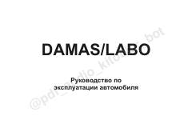

DADamas va Labo avtomobillaridan foydalanish va ularga texnik xizmat ko'rsatish bo'yicha rasmiy qo'llanma.
Ushbu qo'llanma Damas va Labo avtomobillarining tuzilishi, ishlash prinsipi va ularga texnik xizmat ko'rsatish qoidalari haqida batafsil ma'lumot beradi. Unda avtomobilni xavfsiz boshqarish, nosozliklarni bartaraf etish va texnik xizmat ko'rsatish reglamenti bo'yicha muhim tavsiyalar keltirilgan.